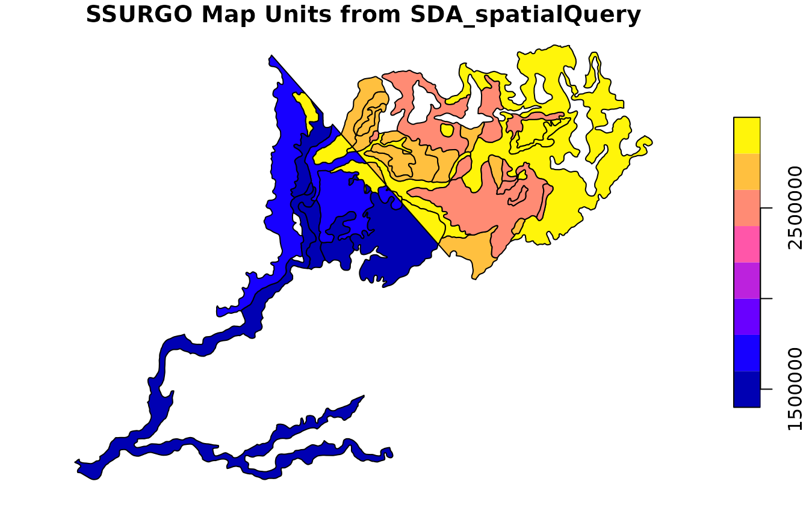
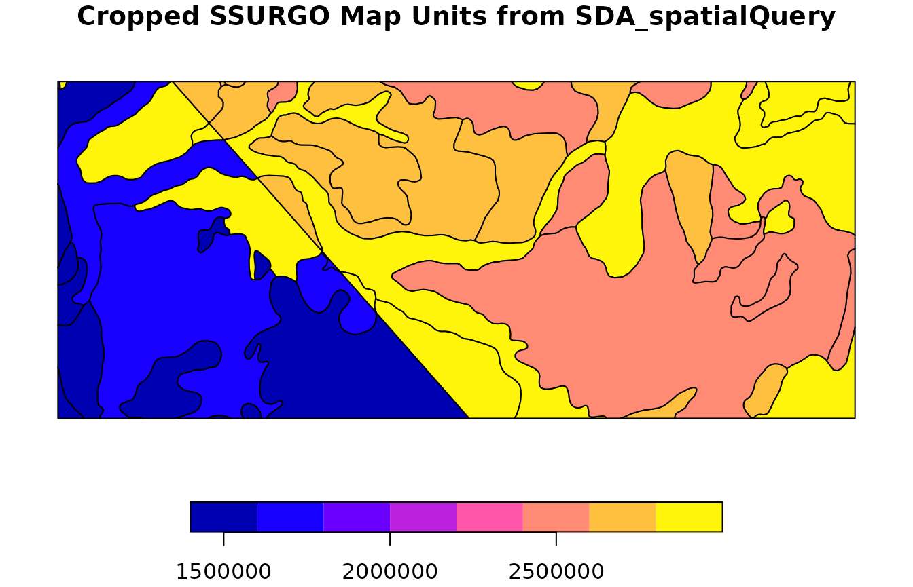
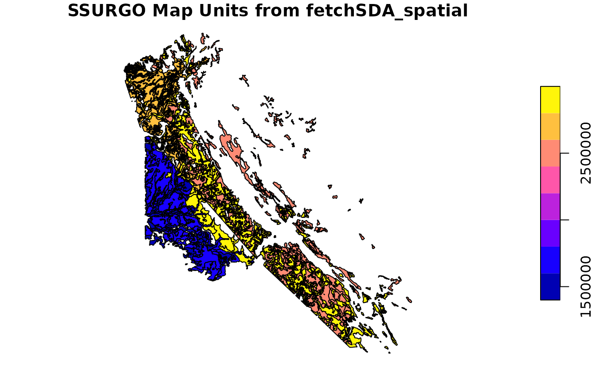
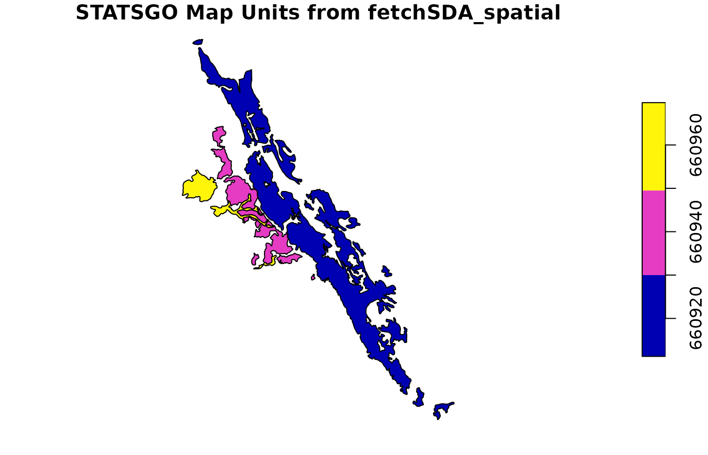
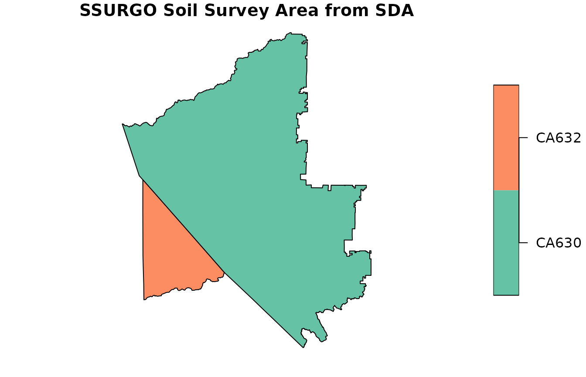
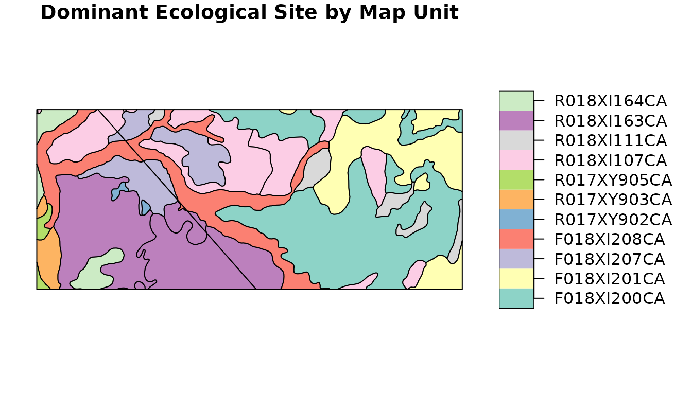

Mapping Dominant Ecological Sites using SSURGO Data
Source:vignettes/dominant-es.Rmd
dominant-es.RmdOverview
This vignette demonstrates how to extract and map dominant ecological
site information for a given Area of Interest (AOI) using the
soilDB package and open-source geospatial tools in R.
For a general introduction to geospatial data in R, see the sf package
documentation, terra package
documentation, the Geocomputation with R book
and the Spatial Data Science with R
and terra book.
We will:
Load SSURGO spatial data
Query Soil Data Access (SDA) for dominant ecological site assignments
Join tabular and spatial data
Export and visualize the results
Prerequisites
In this vignette we will use sf functions and object
types for processing and storing spatial data. This package is used
under the hood by soilDB for processing SSURGO data. The
terra package can be used with only minor changes in
syntax.
Load SSURGO Spatial Data
Using Soil Data Access
You can use SDA_spatialQuery() and
fetchSDA_spatial() to retrieve spatial data directly from
Soil Data Access (SDA), bypassing the need for local files.
Option 1: Use SDA_spatialQuery() to get mukey polygons
for an AOI
Define Area of Interest (AOI) as a bounding box sf
POLYGON.
aoi <- sf::st_as_sfc(sf::st_bbox(c(
xmin = -120.85,
xmax = -120.775,
ymin = 37.975,
ymax = 38.0
), crs = 4326))
# Query SDA for map unit polygons cropped to the AOI
soil_polygons <- SDA_spatialQuery(
aoi,
what = "mupolygon"
)
plot(
soil_polygons["mukey"],
main = "SSURGO Map Units from SDA_spatialQuery"
)
head(soil_polygons)## Simple feature collection with 6 features and 2 fields
## Geometry type: POLYGON
## Dimension: XY
## Bounding box: xmin: -120.9233 ymin: 37.91407 xmax: -120.8087 ymax: 38.01049
## Geodetic CRS: WGS 84
## mukey area_ac geom
## 1 1403432 5.402344 POLYGON ((-120.8315 37.9853...
## 2 2924958 84.229770 POLYGON ((-120.8498 37.9994...
## 3 1605511 517.139158 POLYGON ((-120.8454 37.9730...
## 4 1403418 1647.514959 POLYGON ((-120.9233 37.9183...
## 5 1403439 216.854306 POLYGON ((-120.8488 38.0086...
## 6 1540892 842.104366 POLYGON ((-120.8351 37.9713...You can also set geomIntersection = TRUE so that
intersecting geometries are cropped to the AOI. This is convenient if
you have a very specific AOI in mind or would like to reduce the amount
of data you are going to download.
# Query SDA for map unit polygons cropped to the AOI
soil_polygons <- SDA_spatialQuery(
aoi,
what = "mupolygon",
geomIntersection = TRUE
)
plot(
soil_polygons["mukey"],
main = "Cropped SSURGO Map Units from SDA_spatialQuery"
)
head(soil_polygons)## Simple feature collection with 6 features and 2 fields
## Geometry type: GEOMETRY
## Dimension: XY
## Bounding box: xmin: -120.85 ymin: 37.975 xmax: -120.8113 ymax: 38
## Geodetic CRS: WGS 84
## mukey area_ac geom
## 1 1403432 5.4023439 POLYGON ((-120.8313 37.9853...
## 2 2924958 0.6979041 POLYGON ((-120.8498 37.9994...
## 3 1605511 486.9764647 POLYGON ((-120.8461 37.975,...
## 4 1403418 26.1727977 MULTIPOLYGON (((-120.8495 3...
## 5 1403439 50.9568279 MULTIPOLYGON (((-120.85 37....
## 6 1540892 299.9533110 MULTIPOLYGON (((-120.8304 3...Option 2: Use fetchSDA_spatial()
Next, we use fetchSDA_spatial().
This function is different because instead of using an area of interest, it takes a vector of map unit or legend identifiers.
Here, we take the unique map unit keys from the Option 1 result and return the full extent of those map units (not just the intersecting polygons). This is particularly helpful when doing studies that involve the full extent of map unit concepts, as opposed to more site-specific analyses.
mu_ssurgo <- fetchSDA_spatial(
unique(soil_polygons$mukey),
by.col = "mukey",
add.fields = c("legend.areaname",
"mapunit.muname",
"mapunit.farmlndcl")
)
plot(mu_ssurgo["mukey"], main = "SSURGO Map Units from fetchSDA_spatial")
head(mu_ssurgo)## Simple feature collection with 6 features and 6 fields
## Geometry type: POLYGON
## Dimension: XY
## Bounding box: xmin: -120.9259 ymin: 37.81749 xmax: -120.7199 ymax: 37.92694
## Geodetic CRS: WGS 84
## mukey areasymbol nationalmusym areaname
## 1 1403409 CA632 1j3c8 Stanislaus County, California, Northern Part
## 2 1403409 CA632 1j3c8 Stanislaus County, California, Northern Part
## 3 1403409 CA632 1j3c8 Stanislaus County, California, Northern Part
## 4 1403409 CA632 1j3c8 Stanislaus County, California, Northern Part
## 5 1403409 CA632 1j3c8 Stanislaus County, California, Northern Part
## 6 1403409 CA632 1j3c8 Stanislaus County, California, Northern Part
## muname farmlndcl
## 1 Archerdale clay loam, 0 to 2 percent slopes Prime farmland if irrigated
## 2 Archerdale clay loam, 0 to 2 percent slopes Prime farmland if irrigated
## 3 Archerdale clay loam, 0 to 2 percent slopes Prime farmland if irrigated
## 4 Archerdale clay loam, 0 to 2 percent slopes Prime farmland if irrigated
## 5 Archerdale clay loam, 0 to 2 percent slopes Prime farmland if irrigated
## 6 Archerdale clay loam, 0 to 2 percent slopes Prime farmland if irrigated
## geom
## 1 POLYGON ((-120.9152 37.9105...
## 2 POLYGON ((-120.7258 37.8204...
## 3 POLYGON ((-120.876 37.89232...
## 4 POLYGON ((-120.8446 37.9237...
## 5 POLYGON ((-120.925 37.91919...
## 6 POLYGON ((-120.8505 37.8890...Note that using add.fields we have included some
additional contextual information: area name, map unit name, and map
unit farmland classification.
fetchSDA_spatial() geometry sources
fetchSDA_spatial() geom.src argument can be
used to return SSURGO map unit polygons and survey area polygons,
STATSGO mapunit polygons, and MLRA polygons.
Here is an example using STATSGO. We use
SDA_spatialQuery() to fetch the data for our AOI, then
fetchSDA_spatial() to get the full extent of those map unit
concepts.
statsgo_polygons <- SDA_spatialQuery(
aoi,
what = "mupolygon",
db = "STATSGO",
geomIntersection = TRUE
)
plot(statsgo_polygons["mukey"], main = "STATSGO Map Units from SDA_spatialQuery")
head(statsgo_polygons)## Simple feature collection with 3 features and 2 fields
## Geometry type: POLYGON
## Dimension: XY
## Bounding box: xmin: -120.85 ymin: 37.975 xmax: -120.775 ymax: 38
## Geodetic CRS: WGS 84
## mukey area_ac geom
## 1 660921 1668.6742 POLYGON ((-120.7998 37.975,...
## 2 660939 2596.0225 POLYGON ((-120.8427 37.975,...
## 3 660960 253.0798 POLYGON ((-120.85 37.975, -...
mu_statsgo <- fetchSDA_spatial(
unique(statsgo_polygons$mukey),
by.col = "mukey",
db = "STATSGO",
add.fields = c("legend.areaname", "mapunit.muname", "mapunit.farmlndcl")
)
plot(mu_statsgo["mukey"], main = "STATSGO Map Units from fetchSDA_spatial")
head(mu_statsgo)## Simple feature collection with 6 features and 6 fields
## Geometry type: POLYGON
## Dimension: XY
## Bounding box: xmin: -121.1757 ymin: 36.96048 xmax: -119.6675 ymax: 38.69719
## Geodetic CRS: WGS 84
## mukey areasymbol nationalmusym areaname
## 1 660921 US q5r1 United States
## 2 660921 US q5r1 United States
## 3 660921 US q5r1 United States
## 4 660921 US q5r1 United States
## 5 660921 US q5r1 United States
## 6 660921 US q5r1 United States
## muname farmlndcl geom
## 1 Whiterock-Rock outcrop-Auburn (s818) <NA> POLYGON ((-120.5276 37.9624...
## 2 Whiterock-Rock outcrop-Auburn (s818) <NA> POLYGON ((-121.1396 38.6962...
## 3 Whiterock-Rock outcrop-Auburn (s818) <NA> POLYGON ((-120.794 38.18986...
## 4 Whiterock-Rock outcrop-Auburn (s818) <NA> POLYGON ((-119.7066 36.9942...
## 5 Whiterock-Rock outcrop-Auburn (s818) <NA> POLYGON ((-120.2493 37.7735...
## 6 Whiterock-Rock outcrop-Auburn (s818) <NA> POLYGON ((-120.2653 37.8824...
ssas <- SDA_spatialQuery(aoi, what = "areasymbol")
ssas## areasymbol
## 1 CA632
## 2 CA630
ssa <- fetchSDA_spatial(
ssas$areasymbol,
by.col = "areasymbol",
geom.src = "sapolygon",
add.fields = c("legend.areaname")
)
plot(ssa["areasymbol"], main = "SSURGO Soil Survey Area from SDA")
head(ssa)## Simple feature collection with 2 features and 3 fields
## Geometry type: POLYGON
## Dimension: XY
## Bounding box: xmin: -120.9955 ymin: 37.63352 xmax: -120.1595 ymax: 38.46714
## Geodetic CRS: WGS 84
## lkey areasymbol
## 1 14103 CA630
## 2 17969 CA632
## areaname
## 1 Central Sierra Foothills Area, California, Parts of Calaveras and Tuolumne Counties
## 2 Stanislaus County, California, Northern Part
## geom
## 1 POLYGON ((-120.3907 38.4630...
## 2 POLYGON ((-120.6584 37.8202...
SDA_spatialQuery()
vs. fetchSDA_spatial()
SDA_spatialQuery()is ideal for spatial queries where you have a specific, possibly complex, area of interest.fetchSDA_spatial()returns the full extent of the specified map unit concepts, optionally including more legend and map unit attributes viaadd.fieldsargument.
Local Data Sources
If working with large extents, it is generally better to be use a
local data source. You can download SSURGO data from Web Soil Survey
using downloadSSURGO(). Then, you can create GeoPackage or
other database types using createSSURGO() or the SSURGOPortal
tools. This process is described in detail in the Local
SSURGO Databases vignette. See also the SSURGOPortal R
package.
Assuming you have a GeoPackage from SSURGOPortal
("soilmu_a.gpkg"), then you can read it with
sf::st_read() or terra::vect()
ssurgo_path <- "data/soilmu_a.gpkg" # Replace with your actual path
soil_polygons <- sf::st_read(ssurgo_path)
head(soil_polygons)This soil_polygons object should have the standard set
of columns we would expect for a SSURGO map unit data source, including:
map unit key (mukey), area symbol
(areasymbol), map unit symbol (musym).
Query SDA for Dominant Ecological Site Info
Extract Unique Map Unit Keys
As we did above for fetchSDA_spatial() we are going to
get the unique set of map units in our AOI.
mukeys <- unique(soil_polygons$mukey)Use get_SDA_coecoclass()
eco_data <- get_SDA_coecoclass(mukeys = mukeys)
head(eco_data)## mukey areasymbol lkey muname cokey
## 1 1403409 CA632 17969 Archerdale clay loam, 0 to 2 percent slopes 26037166
## 2 1403409 CA632 17969 Archerdale clay loam, 0 to 2 percent slopes 26037167
## 3 1403409 CA632 17969 Archerdale clay loam, 0 to 2 percent slopes 26037230
## 4 1403409 CA632 17969 Archerdale clay loam, 0 to 2 percent slopes 26037231
## 5 1403409 CA632 17969 Archerdale clay loam, 0 to 2 percent slopes 26037232
## 6 1403409 CA632 17969 Archerdale clay loam, 0 to 2 percent slopes 26037233
## coecoclasskey comppct_r majcompflag compname localphase compkind
## 1 11663307 85 Yes Archerdale clay loam Series
## 2 NA 4 No Capay clay Series
## 3 NA 3 No Hollenbeck clay Series
## 4 NA 1 No Chuloak sandy loam Series
## 5 NA 3 No Hicksville loam Series
## 6 NA 2 No Clear Lake clay Series
## ecoclassid ecoclassname ecoclasstypename
## 1 R017XY903CA Stream Channels and Floodplains NRCS Rangeland Site
## 2 Not assigned Not assigned Not assigned
## 3 Not assigned Not assigned Not assigned
## 4 Not assigned Not assigned Not assigned
## 5 Not assigned Not assigned Not assigned
## 6 Not assigned Not assigned Not assigned
## ecoclassref
## 1 Ecological Site Description Database
## 2 Not assigned
## 3 Not assigned
## 4 Not assigned
## 5 Not assigned
## 6 Not assignedThis function returns a data frame including mukey,
cokey, ecoclassid, and
ecoclassname.
There are several methods for aggregating from component to map unit
level available in get_SDA_coecoclass(). The default
aggregation method is "none" which will return 1 record per
map unit component, so many map units will have more than one
record.
Using method="dominant component"
Most often, users want “typical” conditions that can apply to a whole map unit.
Sometimes it is helpful to be able to point to a specific
component, so that you do not have to reason over mathematical
aggregation of distinct components within map unit concepts. The most
common method to select one component per map unit is
"dominant component"
eco_data_domcond <- get_SDA_coecoclass(
mukeys = mukeys,
method = "dominant component"
)
head(eco_data_domcond)## mukey areasymbol lkey
## 1 1403409 CA632 17969
## 9 1403418 CA632 17969
## 15 1403432 CA632 17969
## 23 1403439 CA632 17969
## 30 1540892 CA632 17969
## 36 1605509 CA632 17969
## muname cokey
## 1 Archerdale clay loam, 0 to 2 percent slopes 26037166
## 9 Hicksville loam, 0 to 2 percent slopes, occasionally flooded 26037240
## 15 Redding gravelly loam, 0 to 8 percent slopes, dry 26037401
## 23 Peters-Pentz association, 2 to 8 percent slopes 26037394
## 30 Mckeonhills clay, 5 to 15 percent slopes 26037481
## 36 Pentz-Peters association, 2 to 50 percent slopes 26037413
## coecoclasskey comppct_r majcompflag compname localphase compkind
## 1 11663307 85 Yes Archerdale clay loam Series
## 9 11663331 85 Yes Hicksville loam Series
## 15 11663401 85 Yes Redding gravelly loam Series
## 23 11663397 60 Yes Peters silty clay loam Series
## 30 11663439 90 Yes Mckeonhills clay Series
## 36 11663404 62 Yes Pentz silt loam Series
## ecoclassid ecoclassname ecoclasstypename
## 1 R017XY903CA Stream Channels and Floodplains NRCS Rangeland Site
## 9 R017XY905CA Dry Alluvial Fans and Terraces NRCS Rangeland Site
## 15 R017XY902CA Duripan Vernal Pools NRCS Rangeland Site
## 23 R018XI164CA Clayey Dissected Swales NRCS Rangeland Site
## 30 R018XI163CA Thermic Low Rolling Hills NRCS Rangeland Site
## 36 R018XI163CA Thermic Low Rolling Hills NRCS Rangeland Site
## ecoclassref
## 1 Ecological Site Description Database
## 9 Ecological Site Description Database
## 15 Ecological Site Description Database
## 23 Ecological Site Description Database
## 30 Ecological Site Description Database
## 36 Ecological Site Description DatabaseNote that this output includes information for the dominant component
(comppct_r and compname).
Using method="dominant condition"
The method "dominant condition" is convenient because it
accounts for the possibility that multiple components have the same
class (ecological site) and can have their component percentages
summed.
For a property like ecological site, it is fairly common for multiple components in a map unit to have the same site assigned, so the dominant condition makes up a higher percentage of the area of the map unit than the dominant component alone.
eco_data_domcond <- get_SDA_coecoclass(
mukeys = mukeys,
method = "dominant condition"
)
head(eco_data_domcond)## mukey areasymbol lkey
## 1 1403409 CA632 17969
## 9 1403418 CA632 17969
## 15 1403432 CA632 17969
## 23 1403439 CA632 17969
## 30 1540892 CA632 17969
## 36 1605509 CA632 17969
## muname cokey
## 1 Archerdale clay loam, 0 to 2 percent slopes 26037166
## 9 Hicksville loam, 0 to 2 percent slopes, occasionally flooded 26037240
## 15 Redding gravelly loam, 0 to 8 percent slopes, dry 26037401
## 23 Peters-Pentz association, 2 to 8 percent slopes 26037394
## 30 Mckeonhills clay, 5 to 15 percent slopes 26037481
## 36 Pentz-Peters association, 2 to 50 percent slopes 26037413
## coecoclasskey comppct_r majcompflag compname localphase compkind
## 1 11663307 85 Yes Archerdale clay loam Series
## 9 11663331 85 Yes Hicksville loam Series
## 15 11663401 85 Yes Redding gravelly loam Series
## 23 11663397 60 Yes Peters silty clay loam Series
## 30 11663439 90 Yes Mckeonhills clay Series
## 36 11663404 62 Yes Pentz silt loam Series
## ecoclassid ecoclassname ecoclasstypename
## 1 R017XY903CA Stream Channels and Floodplains NRCS Rangeland Site
## 9 R017XY905CA Dry Alluvial Fans and Terraces NRCS Rangeland Site
## 15 R017XY902CA Duripan Vernal Pools NRCS Rangeland Site
## 23 R018XI164CA Clayey Dissected Swales NRCS Rangeland Site
## 30 R018XI163CA Thermic Low Rolling Hills NRCS Rangeland Site
## 36 R018XI163CA Thermic Low Rolling Hills NRCS Rangeland Site
## ecoclassref ecoclasspct_r
## 1 Ecological Site Description Database 85
## 9 Ecological Site Description Database 85
## 15 Ecological Site Description Database 85
## 23 Ecological Site Description Database 60
## 30 Ecological Site Description Database 92
## 36 Ecological Site Description Database 67Note that this result includes the aggregate ecological site
composition ecoclasspct_r.
The cokey and comppct_r are from the
dominant component can be used to link to a specific, common component
for other more detailed information.
Join Tabular and Spatial Data
We want to have a 1:1 relationship between our map unit polygons and
the thematic variable we are mapping, so we will use the map unit
dominant condition ecological sites (eco_data_domcond).
soil_polygons <- merge(
soil_polygons,
eco_data_domcond,
by = "mukey"
)Visualize the Result
plot(
soil_polygons["ecoclassid"],
main = "Dominant Ecological Site by Map Unit"
)
This same process for merging in aggregate map unit level information
generalizes to other SSURGO tables. You can easily create thematic maps
from any data you can aggregate to the point that it is 1:1 with the
mukey.
Export to GeoPackage
Finally, we can write our result out to a spatial file, such as a
GeoPackage, using sf or terra. We use the
GeoPackage format because it is open and non-proprietary. Note that the
DBF format used in ESRI shapefiles truncates column names. Use alternate
vector formats like GeoPackage (.gpkg file) for full
attribute support.
sf::st_write(
soil_polygons,
"ecosite_dominant.gpkg",
delete_dsn = TRUE
)